GridView에 'readOnly'(읽기 전용)을 속성으로 설정하는 예제입니다. 'readOnly'가 'true'로 설정되면 셀이 수정 모드로 변경되지 않습니다. 속성으로 설정할 수 있는 단위는 GridView 전체 또는 GridView의 컬럼입니다. 각 기능은 GridView의 속성 'readOnly'과 GridView의 Body Column 속성 'readOnly'으로 제공합니다.
GridView의 함수를 통해 GridView 전체, 로우(Row), 컬럼(Column), 셀(Cell) 단위로도 설정할 수 있습니다.
아래는 관련 함수 목록입니다.
- setCellReadOnly( rowIndex , colIndex , readOnly ) : 셀 단위 설정
- setColumnReadOnly( colIndex , readOnly ) : 컬럼 단위 설정
- setGridReadOnly( readOnly ) : GridView 전체 설정
- setReadOnly( type , rowIndex , colIndex , readOnlyFlag ) : 첫 번째 인자 'type'을 통해 셀, 컬럼, 로우, GridView 전체를 설정
- setRowReadOnly( rowIndex , readOnly ) : 로우 단위 설정
'readOnly'가 설정되지 않은 GridView
속성으로 GridView의 'readOnly' 설정(활성화)
속성으로 GridView 컬럼의 'readOnly' 설정(활성화)
STEP 1. 초기 상태를 확인합니다.
예제 영역 [(기본 설정) 'readOnly' 미설정]에 구성된 GridView를 확인합니다.
모든 셀이 수정 가능하며 각 셀을 클릭하면 수정 모드로 변경됩니다.
'readOnly'가 설정된 셀의 배경색은 회색(#eee)로 설정되어 있습니다.그림 1.브라우저(Chrome) 실행 예시
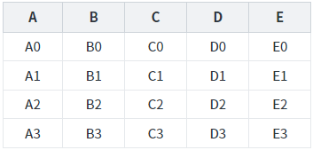
STEP 2. 셀을 클릭합니다.
컬럼 'B'의 첫 번째 로우의 셀을 클릭합니다.
STEP 3. 실행된 결과를 확인합니다.
셀이 수정 모드로 변경됩니다.
그림 2.브라우저(Chrome) 실행 예시 - GridVeiw
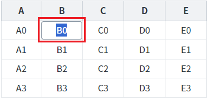
STEP 1. 초기 상태를 확인합니다.
예제 영역 [GridView의 'readOnly' 설정]에 구성된 GridView를 확인합니다.
GridView 전체에 'readOnly'가 적용되어 모든 셀이 수정 모드로 변경되지 않습니다.
'readOnly'가 설정된 셀의 배경색은 회색(#eee)로 설정되어 있습니다.그림 3.브라우저(Chrome) 실행 예시
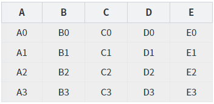
STEP 2. 셀을 클릭합니다.
컬럼 'B'의 첫 번째 로우의 셀을 클릭합니다.
STEP 3. 실행된 결과를 확인합니다.
셀의 배경색은 변경되지만 수정 모드로 변경되지 않습니다.
그림 4.브라우저(Chrome) 실행 예시 - GridVeiw
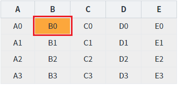
STEP 1. 초기 상태를 확인합니다.
예제 영역 [GridView 컬럼의 'readOnly' 설정]에 구성된 GridView를 확인합니다.
GridView의 컬럼 'B', 'D'에 'readOnly'가 적용되어 해당 컬럼의 셀은 수정 모드로 변경되지 않습니다.
'readOnly'가 설정된 셀의 배경색은 회색(#eee)로 설정되어 있습니다.그림 5.브라우저(Chrome) 실행 예시
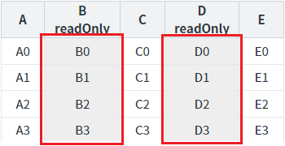
STEP 2. 'readOnly'가 설정된 셀을 클릭합니다.
컬럼 'B'의 첫 번째 로우의 셀을 클릭합니다.
STEP 3. 실행된 결과를 확인합니다.
셀의 배경색은 변경되지만 수정 모드로 변경되지 않습니다.
그림 6.브라우저(Chrome) 실행 예시 - GridVeiw
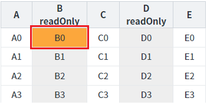
STEP 4. 'readOnly'가 설정되지 않은 셀을 클릭합니다.
컬럼 'C'의 첫 번째 로우의 셀을 클릭합니다.
STEP 3. 실행된 결과를 확인합니다.
셀이 수정 모드로 변경됩니다.
그림 7.브라우저(Chrome) 실행 예시 - GridVeiw
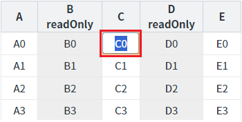
GridView의 속성을 설정합니다.
[필수] readOnly="true"
(적용 우선 순위)
GridView < column < row < cell
(옵션 설명)
false : [default] 'readOnly'를 적용하지 않습니다.
true : 'readOnly'를 적용합니다.
그림 8.웹스퀘어5 SP5 스튜디오의 Design 탭 예시 - GridView 전체를 선택
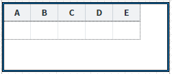
그림 9.웹스퀘어5 SP5 스튜디오의 Property View(속성창) 예시
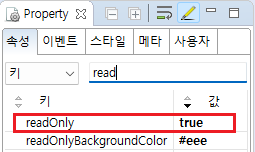
소스 코드
<w2:gridView readOnly="true" > <!-- 중략 --> </w2:gridView>
GridView의 바디 컬럼의 속성을 설정합니다.
[필수] readOnly="true"
(적용 우선 순위)
GridView < column < row < cell
(옵션 설명)
false : [default] 'readOnly'를 적용하지 않습니다.
true : 'readOnly'를 적용합니다.
그림 10.웹스퀘어5 SP5 스튜디오의 Design 탭 예시 - GridView의 Body Column을 선택
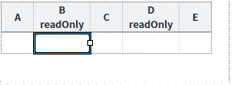
그림 11.웹스퀘어5 SP5 스튜디오의 Property View(속성창) 예시
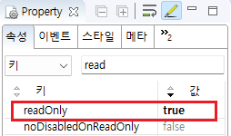
소스 코드
<w2:gridView> <!-- 중략 --> <w2:gBody id="gBody1" style=""> <w2:row id="row2" style=""> <w2:column id="col_a"></w2:column> <w2:column id="col_b" readOnly="true"></w2:column> <w2:column id="col_c"></w2:column> <w2:column id="col_d" readOnly="true"></w2:column> <w2:column id="col_e"></w2:column> </w2:row> </w2:gBody> </w2:gridView>
readOnly
[body column] readOnly
[웹스퀘어5 SP5 개발 가이드] GridView
링크 : https://docs1.inswave.com/sp5_user_guide/86bdcf48029b958b
[웹스퀘어5 SP5 개발 가이드] GridView 읽기 전용
링크 : https://docs1.inswave.com/sp5_user_guide/86bdcf48029b958b#c77b765ed53dce56